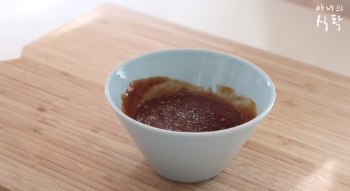
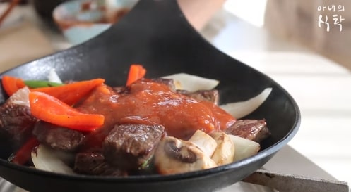

찹스테이크
Chop Steak
재료 : 양파 1/2개, 파프리카 1/2개, 양송이 버섯 8개, 마늘 6쪽, 버터 1큰술,
오이고추 2개, 로즈마리 약간, 쇠고기 등심(안심) 300g, 올리브유 약간,
스테이크소스 4큰술, 케찹 2큰술, 머스타드 1/2큰술, 굴소스 1큰술, 후추, 소금
1. 쇠고기는 한입크기로 썰고 올리브유를 약간 뿌려주세요.
2. 마늘 3쪽, 로즈마리 약간, 후추 약간, 소금 약간을 소고기에 뿌려주세요.
(사진-1)
3. 양파와 오이고추, 양송이버섯, 파프리카, 마늘 3쪽을 손질해주세요.

4. 스테이크소스와 케찹, 다진마늘 1작은술, 머스타드소스 1/2큰술, 굴소스 1큰술
후추약간, 소금약간으로 소스를 만들어주세요.
(사진-2)
5. 팬에 버터1큰술을 올리고 녹여주세요.
6. 그위에 소고기를 올리고 겉면이 익었을때 손질해둔 채소를 올리고
같이 구워주세요.
(사진-3)

7. 야채가 어느정도 익어 갈때 소스를 넣고 구워주세요.
(사진-4)
관련 영상